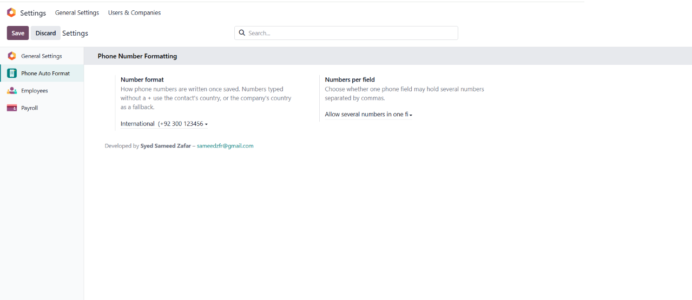
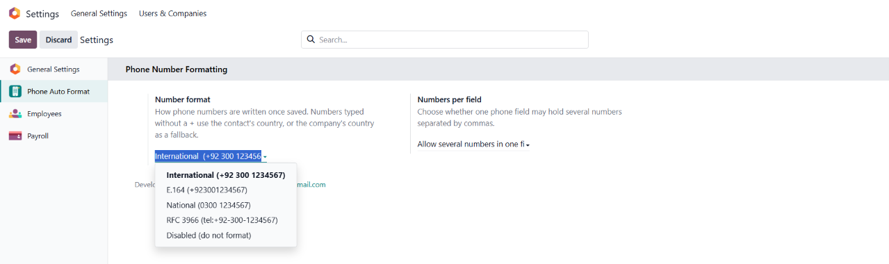
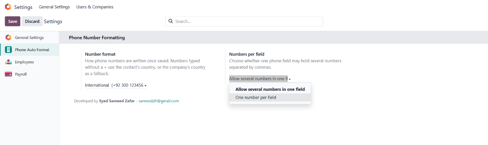
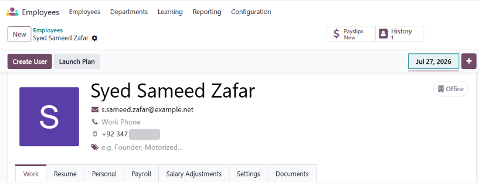

|
ODOO 17 | CONTACT DATA QUALITY Phone Auto FormatOne consistent phone number format across your whole database, applied automatically as your team types and saves.
|
Phone numbers are often entered with different spaces, symbols, prefixes and local formats. Those differences make records harder to search, compare and use. Phone Auto Format standardizes numbers automatically using the format you select in Odoo Settings.
| AS ENTERED | STANDARDIZED IN ODOO |
|---|---|
| 0300 1234567 | +92 300 1234567 |
| 0092-300-1234567 | +92 300 1234567 |
| (0300) 123 4567 | +92 300 1234567 |
Practical formatting controls, without a separate service or a complicated workflow.
|
01 Formats as you type The number is reformatted when the user leaves the field and again when the record is saved, helping cover normal form edits as well as imports and API-driven updates. |
02 Choose your format Select International, E.164, National or RFC 3966 formatting — or switch formatting off. Update your choice any time in Settings. |
|
03 Multiple numbers per field Separate numbers with a comma, semicolon or new line. Each number is processed independently. |
04 Custom field support Stored text fields with phone or mobile in their technical name are handled too, including fields created with Odoo Studio. |
|
05 Safe by design If a value cannot be interpreted as a phone number, it is left unchanged. Existing user input is not silently discarded. |
06 Private and self-hosted Uses Odoo's phone validation and the phonenumbers library. No external formatting service is used and phone data stays on your Odoo server. |
Configure the behavior once, then let the module handle phone number formatting in your Odoo workflow.
|
 |
| One place to configure Phone Auto Format in Odoo Settings. |
|
 |
| Choose International, E.164, National or RFC 3966 formatting, or disable formatting. |
|
 |
| Handle one number or multiple numbers in a single phone field. |
|
 |
| Consistent phone numbers on contacts and employee records. |
|
01 Install Install Phone Auto Format from Apps. Ensure the phonenumbers Python library is available in your Odoo environment. |
02 Choose a format Open Settings > Phone Auto Format, select your preferred number format and save. |
03 You're ready Numbers are formatted when records are edited or saved. Set your company's country to help interpret numbers entered without a country code. |
| International | Displays numbers with an international country prefix and readable grouping. |
| E.164 | Uses the international standard representation, typically beginning with + and containing digits. |
| National | Displays the number in the national format for its country. |
| RFC 3966 | Uses the tel URI format for standardized telephone number references. |
|
Phone Auto Format For CRM Extends formatting to CRM leads and opportunities. Installs automatically when the CRM application is installed. |
Phone Auto Format For Employees Extends formatting to work, mobile, private and emergency phone fields. Installs automatically when the Employees application is installed. |
| • | Existing records are reformatted the next time they are saved; installation does not imply a bulk rewrite of every existing record. |
| • | Numbers entered without a country code use the contact's country, or your company's country as a fallback. |
| • | Designed for Odoo 17.0 Community and Enterprise editions. |
|
Questions or suggestions? Phone Auto Format is developed and maintained by Syed Sameed Zafar, Backend Engineer and Odoo / ERP Consultant. |